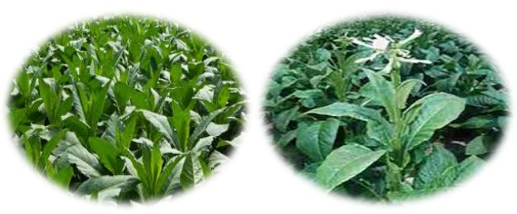
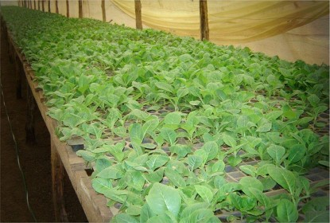
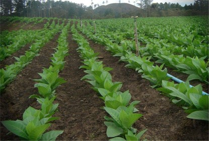
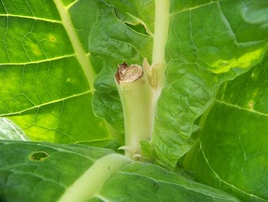
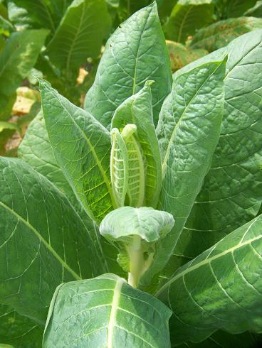
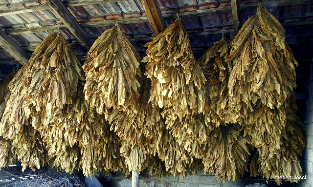

|  |
The genus Nicotiana includes more than 60 species, of which N. tabacum and N. rustica are the two commonly
cultivated for producing commercial tobacco. N. tabacum is widely cultivated in most countries of the world while N. rustica is restricted to India,
Russia and few other Asiatic countries. The primary centre of origin of N. tabacum is South America and that of N. rustica peru.
Area and production
In India tobacco is predominantly cultivated in AP, Gujarat, Karnataka, UP and Bihar. Gujarat accounts for 45 per cent of the area (0.13 M ha) and 30 per cent of production
(0.16 M t). Productivity is also highest (1700 kg ha-1) in Gujarat followed by AP.
Types of tobacco
Anand area of Gujarat grows wholly bidi tobacco. Nipani area of Karnataka grows bidi tobacco.
North Bihar and Bengal area has both tabacum and rustica types used in the manufacture of hookah and to a limited extent chewing and snuff types.
Madurai and Coimbatore area of Tamil Nadu grow cigar, filter, binder and chewing tobaccos.
Climate and soil
In India, tobacco is grown when the mean temperature is 20° to 27°C. When grown as rainfed crop, it requires at least about 500 mm of well distributed rainfall
during crop growing season. It is not usually grown where rainfall exceeds 1200 mm during the season. Rainfall is undesirable during crop maturity, as gums and resins
on the leaf get washed. In India, all types of tobaccos except cigar, filter and binder tobaccos and chewing tobacco of south India receive very little rain during growing season.
In India, cigar and binder tobaccos are grown on sandy to loamy red soils of Coimbatore, Tiruchirapalli and Madurai districts of Tamil Nadu. It needs larger quantities
of nitrogen, potassium, calcium and magnesium. Light to medium loams of old alluvium origin are best suited to bidi tobacco. In Tamil Nadu chewing tobacco is grown on
well drained red soils of Coimbatore, Tanjore, Salem and Madurai districts.
Nursery Management
|  |  |
Tobacco seeds are very small and egg-shaped with thick seed- coat. They are about 0.75 mm long, 0.53 mm broad and 0.47 mm thick.
Depending on the variety and the conditions under which the seed is produced, the size and the weight of the seed vary considerably.
In N. tabacum the average weight of the seed is 0.08 to 0.09 mg and there are 11,000 - 12,000 seeds per gram. In N. rustica, the seed is larger and about three times heavier.
The emerging seedlings are tiny and delicate and therefore, the seeds are unsuitable for sowing directly in the field.
Hence they are sown in small areas called nurseries or seed beds and tended carefully till the seedlings attain a particular size before transplanting in the main field.
For successful raising of nurseries proper location, good preparation and manuring, adequate facilities for watering and timely controlling of pests and diseases are essential.
Generally tobacco nurseries are grown on sandy or sandy loam soil. The cigarette-tobacco growing areas of Andhra Pradesh are an exception in that the
crop is grown on a heavy black soil and the nurseries are generally raised on sandy to gravely loams. Raising of nurseries on heavy black soils is hazardous
due to poor internal drainage caused by high clay content coupled with prevalence of heavy rainfall and high temperatures, pre-disposing the crop for disease like damping off.
The nursery site should have a good internal as well as surface drainage and should be situated at an elevated place. Growing of a green manure crop like dhaincha or
sunnhemp for 6 to 7 weeks and ploughing it is also practiced in places like Dinhata (West Bengal).
It is desirable to change the nursery site every year as it would minimise incidence of pests and diseases and also eliminate contamination by other varieties. If it is not possible to change the site, old site can be used after sterilizing by rabbing, i.e. by burning any readily available slow-burning waste-materials like, tobacco-stalks, paddy-husk, sugarcane-trash, etc. For the best results this operation should be done at the right moisture content, after the final preparation of the bed and a few days before sowing.
Tillage
In general, preparatory tillage is almost common for all tobaccos. However, the number of ploughings varies from soil to soil depending on soil physical properties.
There is also practice of digging the field with cow bars soon after the harvest of preceding crop. During the active monsoon period, hand removal of weeds is resorted
to for keeping the field weed free since ploughing of heavy soils is impracticable.
Topping
|  |
Topping is removal of terminal bud with or without some of the op leaves just before or after the emergence of the flower head.
Desuckering or suckering
|  |
After topping, the auxillary buds grow and put forth shoots known as suckers. Removal of these suckers is called desuckering or suckering.
The objective of topping and desuckering is to divert the energy and nutrients from flowers to the leaves for increasing their size and final leaf yield beside improvement
in quality. Most of the tobaccos grown are topped and suckered, except wrapper tobacco where texture is important.
Varieties and seasons
Sl.no |
Type of tobacco |
States |
1. |
FCV tobacco |
AP and Karnataka |
2. |
Bidi tobacco |
Gujarat and nipani area of karnataka |
3. |
Cigar and Cheroot |
Tamil Nadu and West Bengal |
4. |
Hookah tobacco |
Assam, West Bengal, Bihar and UP |
5. |
Chewing and snuff> |
Tamil Nadu, West Bengal, Bihar, Assam and UP |
6. |
Natu, burley, lanka HDBRG |
Andhra Pradesh |
7. |
Pikka tobacco |
Orissa |
Sl.no |
Type of tobacco |
Varieties |
1. |
FCV tobacco |
CTRI special, Jayasri, Godavari special and G 11 |
2 |
Bidi tobacco |
Keliu 20, surati 20, anand 23, anand 119 and hunkumathiri |
3 |
Cigar and Cheroot |
Yerumaikappal, monnakappal, mandival, adugumalli |
4. |
Hookah tobacco |
Anand 145, S 57, VD 1, VTK 1, WR 2 and PV 7 |
5. |
Chewing and snuff |
Shivapur, sona, Bhagyalakshmi, pusa, prabha and meenakshi |
6. |
Natu, burley, lanka HDBRG |
Peddavittanam, Rangapuram and viswanath |
Seasons
Optimum time of sowing nurseries and transplanting varies from place to place and for different types and varieties even in the same place. Generally,
nurseries are raised from April to May and transplanted upto October.
Weed management
|
Weed problems in tobacco are acute both in the seedbed and in the transplanted crop. Orobanche is also a predominant parasitic weed in tobacco.
Nurseries
Most common method of weeding in tobacco nurseries in tropical and subtropical countries is hand pulling. In developed countries, however, chemicals are used for effective
weed control. Some of the temporary soil sterilants used in tobacco nurseries are
Methylbromide (8-10 kg 100-3)
Metham (2-5 kg 100-3)
Calcium cyanamide (50-60 kg 100-3)
Transplanted field
Critical period of weed competition in the planted crop is the first 60 days after transplantation. In a transplanted crop, inter-row cultivation is feasible due to wider row spacing.
Hence, one or two cultivations followed by manual weeding give adequate control of weeds. As tobacco is sensitive to most POST herbicides. PPI herbicides provide effective weed control.
Herbicides commonly recommended before planting the seedlings in the main field are
Pronamide (1.5-2)
Fluchloralin (2-3)
Isopropalin (1.5-2)
Isoxaben (1.5-2.5)
Against Orobanche cernua (broomrape) in particular, fumigating with DMTT granules at 300-500 kg ha-1 about 30-40 days before transplanting tobacco seedling
is effective.
Harvesting
The signs of maturity and the method of harvest differ with the type of tobacco. Essentially, there are two methods of harvest: priming and stalk cut method.
Priming
In tobacco, generally, lower leaves mature first followed by upper leaves in regular ascending order. Harvesting is done by removing a few leaves as and when they mature.
This method of harvesting is known as priming. Cigarette and wrapper tobaccos are harvested by priming.
Stalk cut method
Cigar, cheroot, chewing, bidi and hookah tobaccos are harvested by stalk cut method. In this method, plants are cut close to the ground with a sickle and generally
left in the field overnight for wilting. Subsequent handling varies with the method of curing. The correct stage of harvest is when maximum number of leaves mature.
|  |
Curing is a slow process of starvation phenomenon to produce dried leaf of suitable physical and chemical property attained by various regimes of
ventilation, temperature and humidity control. At the completion of curing process, even though the leaf is dead in the biological sense, some active enzymes may be present.
The freshly harvested leaf may be grouped into three components, which are likely to change upon curing. The static group, dynamic group and nitrogen group are the three classes.
The static group is less variable and consists of crude fibre, cellulose, hemicellulose, pectins, tannins etc. in the nitrogen group, some changes takes place. The components
include proteins, soluble nitrogen including ammonia, nitrates, amides and alkaloids. Major changes take place in the dynamic group, which
is made up of sugars, starches and organic acids.